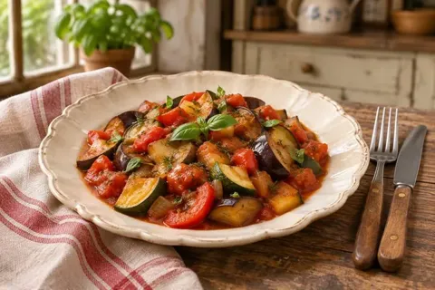
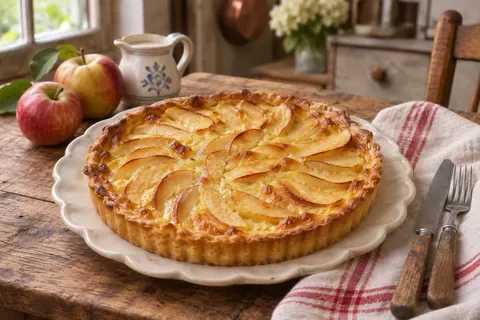

Emplettes en une minute
L'essentiel
Des recettes faciles
Des plats de tous les jours, expliqués pas à pas. Leurs ingrédients vont tout seuls dans la liste.
Préparer à plusieurs
Une liste commune, que chaque membre du foyer complète. On repart d'une liste type ou des courses précédentes.
Dans l'ordre des rayons
L'application apprend votre parcours dans chaque magasin : la liste se range dans l'ordre où vous passez.
Tout le foyer
Un code de foyer suffit, sans compte ni mot de passe. Les données sont chiffrées avec ce code.
Même sans réseau
Tout est enregistré sur l'appareil : au fond du magasin, l'application fonctionne normalement.
Les recettes
596 recettes de tous les jours, de l'apéritif au dessert. Chacune tient en quelques étapes courtes, avec des ingrédients simples et leur quantité : rien de compliqué, tout le monde peut s'y mettre.
- On choisit une recette par son nom, un ingrédient, la saison ou le temps dont on dispose.
- On coche ce qu'il faut acheter : le sel, l'huile et le reste du placard sont déjà décochés.
- Les ingrédients rejoignent la liste, chacun à sa place dans l'ordre des rayons, avec « pour : la recette ».
- De retour à la maison, la recette attend sur l'accueil : il n'y a plus qu'à cuisiner.
Pour 2 ou pour 8 : les quantités s'ajustent au nombre de personnes.

